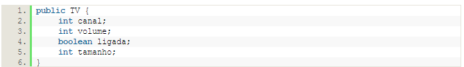
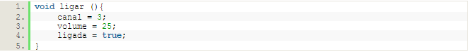
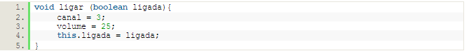
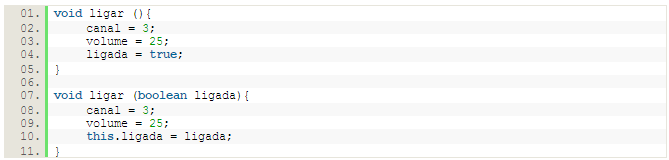

Java nos permite criar vários métodos com o mesmo nome desde que tenham parâmetros diferentes. Isso é o que chamamos de sobrecarga de métodos.
A sobrecarga de métodos consiste em criarmos o mesmo método com possibilidades de entradas diferentes. Essas entradas, caracterizadas como parâmetros, devem sempre ser de tipos diferentes, quantidades de parâmetros diferentes ou posições dos tipos diferentes.
Para visualizarmos um cenário, vejamos a classe abaixo:
Agora, criaremos o método ligar. O método ligar, simplesmente, muda o valor dos atributos canal e volume para 3 e 25, respectivamente.
Agora, vamos personalizar este método para que ele mude o atributo ligada de acordo com o parâmetro.
Poderíamos utilizar ambos os métodos na mesma classe se quisermos, porque um possui argumentos e o outro não.
Porém, o mesmo não pode ser aplicado aos atributos canal e volume. Porque não é possível criar um método que recebe um inteiro e criar um outro método com o mesmo nome que também recebe um inteiro, mesmo que estes dois inteiros sejam totalmente diferentes. Se visualizarmos como Java interpreta o método, veríamos:
void ligar (int volume) = void ligar (int canal)
void ligar (int) = void ligar (int)